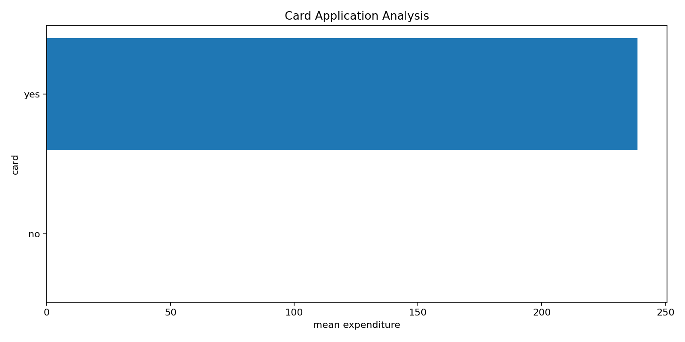

How do recorded expenditure values differ by card acceptance?
The largest observed mean expenditure is 238.602 for yes. This ranking is descriptive, not a recommendation.

| segment | rows_used | metric | minimum | maximum |
|---|---|---|---|---|
| no | 296 | 0.000000 | 0.0 | 0.000 |
| yes | 1023 | 238.602421 | 0.0 | 3099.505 |
Expenditure zeros and acceptance selection require source interpretation; this is not a validated lending model.
Audit zero expenditures and selection before customer segmentation.